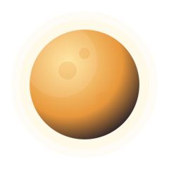
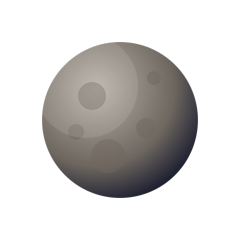
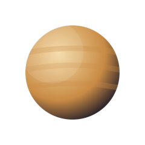
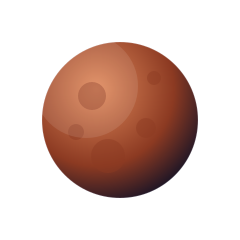
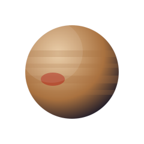
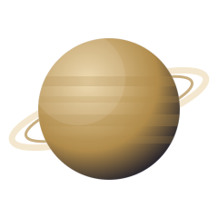
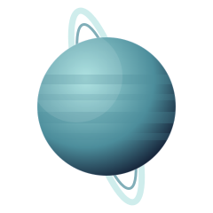
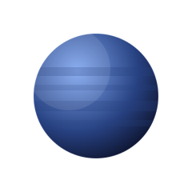

Pusat 00
Matahari
Bintang yang menyalakan seluruh tata surya
- Diameter: ± 1.392.000 km (109x Bumi)
- Suhu permukaan: ± 5.500°C
- Komposisi: 73% hidrogen, 25% helium
- Peran: Sumber cahaya, panas, dan gravitasi yang mengikat seluruh planet
Matahari begitu besar hingga bisa menampung lebih dari 1 juta planet seukuran Bumi di dalamnya. Meski begitu, cahayanya baru sampai ke Bumi setelah menempuh perjalanan sekitar 8 menit 20 detik.

Urutan 01
Merkurius
Si kecil yang paling dekat dan paling gesit
- Jarak dari Matahari: ± 57,9 juta km
- Diameter: 4.879 km (terkecil di tata surya)
- Satu tahun: 88 hari Bumi
- Satelit: Tidak ada
- Permukaan: Berbatu dan penuh kawah, tanpa atmosfer tebal untuk menahan panas
Satu hari penuh di Merkurius (dari terbit matahari hingga terbit lagi) berlangsung selama 176 hari Bumi — lebih lama daripada satu tahunnya sendiri!

Urutan 02
Venus
Planet terpanas, terbungkus awan asam
- Jarak dari Matahari: ± 108,2 juta km
- Diameter: 12.104 km (mirip ukuran Bumi)
- Satu tahun: 225 hari Bumi
- Suhu permukaan: ± 465°C akibat efek rumah kaca ekstrem
- Rotasi: Berputar terbalik (retrograde) dan sangat lambat
Karena arah rotasinya terbalik, jika kamu berdiri di Venus, matahari akan terbit dari barat dan terbenam di timur. Satu harinya juga lebih panjang dari satu tahunnya.
Urutan 03
Bumi
Satu-satunya rumah yang kita kenal
- Jarak dari Matahari: ± 149,6 juta km (1 SA / Satuan Astronomi)
- Diameter: 12.742 km
- Satu tahun: 365,25 hari
- Permukaan: 71% tertutup air, beratmosfer kaya oksigen
- Satelit: 1 (Bulan)
Bumi tidak benar-benar bulat sempurna — bentuknya sedikit pepat di kutub dan menggembung di ekuator karena efek rotasinya. Medan magnetnya juga melindungi kita dari radiasi berbahaya Matahari.

Urutan 04
Mars
Si Planet Merah dengan gunung raksasa
- Jarak dari Matahari: ± 227,9 juta km
- Diameter: 6.779 km
- Satu tahun: 687 hari Bumi
- Warna khas: Merah karena permukaannya kaya oksida besi (karat)
- Satelit: 2 (Phobos dan Deimos)
Mars punya Olympus Mons, gunung berapi tertinggi di tata surya — ketinggiannya hampir 3 kali Gunung Everest. Mars juga memiliki ngarai raksasa, Valles Marineris, yang panjangnya melebihi lebar Amerika Serikat.

Urutan 05
Jupiter
Raksasa gas dengan badai abadi
- Jarak dari Matahari: ± 778,5 juta km
- Diameter: 139.820 km (planet terbesar)
- Satu tahun: ± 12 tahun Bumi
- Rotasi: Sangat cepat, hanya sekitar 10 jam per hari
- Satelit: Lebih dari 95, termasuk 4 bulan besar Galileo
Bintik Merah Besar (Great Red Spot) di Jupiter adalah badai raksasa yang sudah berlangsung selama ratusan tahun dan ukurannya lebih besar dari Bumi. Gravitasi Jupiter juga membantu "menyapu" komet dan asteroid yang mengancam planet dalam.

Urutan 06
Saturnus
Terkenal karena cincin megahnya
- Jarak dari Matahari: ± 1,43 miliar km
- Diameter: 116.460 km
- Satu tahun: ± 29,5 tahun Bumi
- Densitas: Sangat rendah, secara teori bisa mengapung di air (jika ada lautan yang cukup besar)
- Satelit: Lebih dari 140, termasuk Titan yang beratmosfer tebal
Cincin Saturnus tersusun dari es dan batu, terbentang ratusan ribu kilometer lebarnya, tapi tebalnya hanya sekitar puluhan meter — proporsinya seperti selembar kertas yang sangat lebar.

Urutan 07
Uranus
Planet es yang berputar sambil "menggelinding"
- Jarak dari Matahari: ± 2,87 miliar km
- Diameter: 50.724 km
- Satu tahun: ± 84 tahun Bumi
- Kemiringan sumbu: Ekstrem, sekitar 98 derajat
- Warna khas: Biru-hijau pucat karena kandungan gas metana
Karena kemiringan sumbunya yang ekstrem, satu kutub Uranus bisa mengalami "siang" terus-menerus selama 21 tahun, sementara kutub lainnya gelap total selama periode yang sama.

Urutan 08
Neptunus
Ujung tata surya yang berangin kencang
- Jarak dari Matahari: ± 4,5 miliar km
- Diameter: 49.244 km
- Satu tahun: ± 165 tahun Bumi
- Angin: Angin tercepat di tata surya, bisa melebihi 2.000 km/jam
- Warna khas: Biru tua pekat karena gas metana
Neptunus ditemukan pada tahun 1846 lewat perhitungan matematika sebelum benar-benar diamati lewat teleskop. Sejak ditemukan, Neptunus baru menyelesaikan satu putaran penuh mengelilingi Matahari pada tahun 2011.